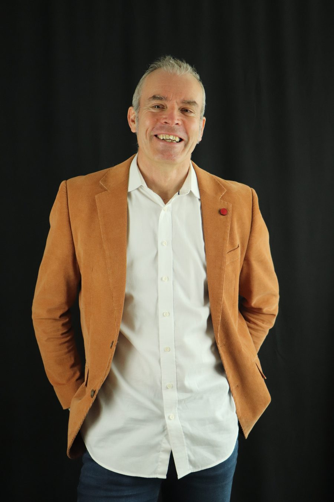
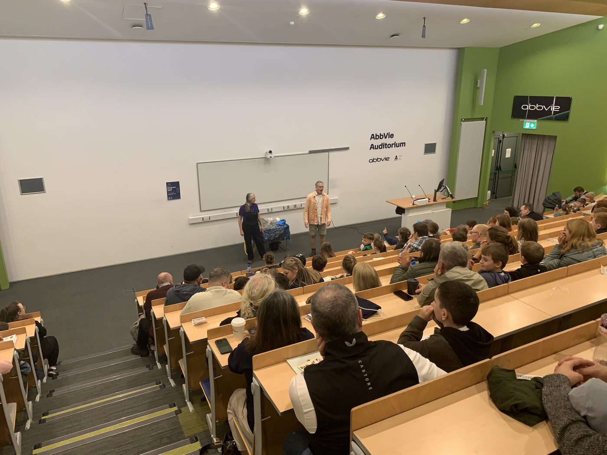

Nearly two decades on stage — in theatre, theatre-in-education, film and TV — now brought directly to bear on one of the most universal challenges in professional life.

Karsten Huttenhain is an Edinburgh-based speaking confidence coach with nearly two decades of professional acting experience across theatre, theatre-in-education, film, TV commercials and corporate productions.
His methodology is not borrowed from another coaching tradition. It comes directly from the rehearsal room, the stage and the screen — from the discipline of using the body, breath and voice as precision instruments, and from learning to be present, authentic and compelling under pressure.
He has worked as a science communicator with Edinburgh Science and Generation Science, delivering STEM workshops in schools across Scotland — giving him unusual depth in making complex ideas land clearly for any audience, in any room.
The Speaking Edge was founded on a simple conviction: that the fear of speaking is almost entirely curable, and that the most effective tools for curing it come not from business coaching, but from the performing arts.
"Transform your relationship with speaking." That is the mission. Not to make you someone you are not. To give the person you already are a voice powerful enough to be heard.
Work with Karsten
Holding a room — AbbVie Auditorium, Sligo
We know our craft inside out. We speak with conviction and we back it up with two decades of professional practice.
We genuinely care about the people we work with. Technical rigour without warmth is just instruction. We work differently.
We bring aliveness into every session. Speaking is a physical, embodied act — and our coaching reflects that.
We are rooted in technique, not trends. The PERFORM framework is built on what actually works — in performance and in life.
A free 20-minute discovery call to find out if The Speaking Edge is right for you.
Book a discovery callEdinburgh & online. Worldwide delivery.